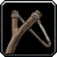

Alliance -
Badlands (40-41)
Alliance -
Badlands (40-41)
-

City of Ironforge
-

[Frost Oil]
From AH
-
[Gyrochronatom]
Don't buy if you didn't find a Frost Oil
-
[Healing Potion]
Don't buy if you didn't find a Frost Oil and Gyrochronatom
-
[Lesser Invisibility Potion]
Don't buy if you didn't find a Frost Oil and Gyrochronatom
-

-

Upgrade your ammo!
Hunter only
-
Loch Modan
-
Stable your pet
Hunter only
-
-

-
-


Badlands
Southwest of Ironband's (46,76)
-
-
-
-
-
Kill any buzzards you see
For "Barbecued Buzzard Wings" and "Badlands Reagent Run"
-

Dash (Rank 2)
Tame a Ridge Stalker Patriarch (20,53)
Hunter only -
Prowl (Rank 2)
Hunter only
-

Stoutlager Inn
Hunter only
-
Switch back to your cat
Don't dismiss the Badlands cat!
Hunter only -
Badlands
Hunter only
-

-
-
-
Mirages
Back up the hill
-
-
-
-
-
Keep an eye out for the ogre pack
They spawn to the south of the questgiver (62,70). They patrol down to the southwest side of the zone and back in a circle. You should be able to pick Boss Tho'grun off the back of the pack easily.
-
-
-
Murdaloc
To the south in the trogg camp
-
-
-
-
-
-
-
-
-
-
-
-
-
Study of the Elements: Rock (Part 2)
Rock Elementals in the same area as the last step
-
-
-
Badlands Reagent Run
Kill buzzards and coyotes south of the gnomes.
-
-
-
-
-
-
-
-
-
This Is Going to Be Hard (Part 3)
Kill the summoned elemental!
-
-
-
-
Fiery Blaze Enchantments
Kill whelps in the ravine to the east. Droprate kind sucks, you may want to skip this.
-
-
-
Badlands Reagent Run
Back at Thelsamar, skip the follow-up.
Download the TourGuide addon for free at
WoW Interface
 Help feed a poor starving bear cub!
Help feed a poor starving bear cub!
 Hosted by the screwballs at WoW Interface
Hosted by the screwballs at WoW Interface
 Tooltips and maps powered by Wowhead
Tooltips and maps powered by Wowhead

Alliance
- Dun Morogh (1-11)
- Elwynn Forest (1-12)
- Azuremyst Isle (1-12)
- Bloodmyst Isle (12-20)
- Darkshore (20-21 Draenei)
- Teldrassil (1-12)
- Darkshore (12-17)
- Loch Modan (17-18)
- Redridge Mountains (18-20)
- Darkshore (20-21)
- Ashenvale (22-24)
- Wetlands (25-27)
- Redridge Mountains (27-28)
- Duskwood (28-29)
- Ashenvale (29-30)
- Wetlands (30-31)
- Hillsbrad Foothills (31-32)
- Desolace (33-34)
- Stranglethorn Vale (36-37)
- Dustwallow Marsh (37-38)
- Stranglethorn Vale (38-40)
- Badlands (40-41)
- Stranglethorn Vale (41-42)
- Tanaris (43)
- Feralas (43-45)
- The Hinterlands (46-47)
- Feralas (47)
- Tanaris (47-48)
- Blasted Lands (49-50)
- Searing Gorge (50-51)
- Kalimdor (51)
- Un'Goro Crater (51-52)
- Azshara (52-53)
- Felwood (53-54)
- Winterspring (54-55)
- Burning Steppes (55-56)
- Silithus (56)
- Western Plaguelands (56-57)
- Eastern Plaguelands (57-58)
- Western Plaguelands (58)
- Eastern Plaguelands (58)
- Western Plaguelands (58-59)
- Hellfire Peninsula (60-62)
- Zangarmarsh (62-63)
- Terokkar Forest (64-65)
- Nagrand (65-66)
- Blade's Edge Mountains (66-67)
- Netherstorm (67-70)
- Shadowmoon Valley (70)

Horde
- Eversong Woods (1-13)
- Ghostlands (13-20)
- Tirisfal Glades (1-12)
- Mulgore (1-12)
- Durotar (1-12)
- The Barrens (12-20)
- The Barrens (20)
- Stonetalon Mountains (20-21)
- The Barrens (22-23)
- Stonetalon Mountains (23-25)
- The Barrens (25)
- Thousand Needles (25-26)
- Ashenvale (26-27)
- Stonetalon Mountains (27)
- Thousand Needles (27-29)
- Hillsbrad Foothills (29-30)
- Arathi Highlands (30)
- Stranglethorn Vale (30-31)
- Thousand Needles (31-32)
- Desolace (32-34)
- Stranglethorn Vale (34-36)
- Arathi Highlands (36-37)
- Alterac Mountains (37)
- Thousand Needles (37)
- Dustwallow Marsh (37-38)
- Stranglethorn Vale (39-40)
- Badlands (40-41)
- Swamp of Sorrows (41-42)
- Stranglethorn Vale (42-43)
- Dustwallow Marsh (43-44)
- Tanaris (44-45)
- Feralas (45-46)
- Azshara (46-47)
- Stranglethorn Vale (47)
- Searing Gorge (47-48)
- Swamp of Sorrows (48-49)
- Tanaris (49-50)
- Azshara (50)
- The Hinterlands (50-51)
- Un'Goro Crater (51-53)
- Burning Steppes (53-54)
- Felwood (54)
- Winterspring (54-55)
- Western Plaguelands (56)
- Eastern Plaguelands (56-57)
- Western Plaguelands (57-59)
- Hellfire Peninsula (60-61)
- Zangarmarsh (61-63)
- Terokkar Forest (63-65)
- Nagrand (65-67)
- Blade's Edge Mountains (67-68)
- Netherstorm (68-69)
- Shadowmoon Valley (69-70)